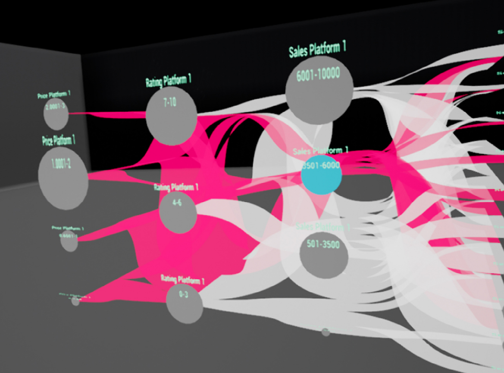

The Data in Your Hands: Exploring Novel Interaction Techniques and Data Visualization Approaches for Immersive Data Analytics

Venue. AVI (2018) Workshop Paper
Authors. Natalie Hube, Mathias Müller
Materials.
PDF
Abstract. In this paper, we describe a concept for visualization and interaction with a large data set in an virtual environment. The core idea uses the traditional flat 2D representation as a base visualization but lets the user transform it into a spatial 3D visualizations on demand. Our visualization and interaction concept targets data analysts to use it for exploration and analysis, utilizing virtual reality to gain insight into complex data sets. The concept is based on the use of Parallel Sets for the representation of categorical data. By extending the conventional 2D Parallel Sets with a third dimension, correlations between path variables and the related number of items belonging to a specific node can be visualized. Furthermore, the concept uses virtual reality controllers in combination with a head-mounted display to control additional views. The purpose of the paper is to describe the core concepts and challenges for this type of spatial visualization and the related interaction design, including the use of gestures for direct manuipulation and a hand-attached menu for complex actions